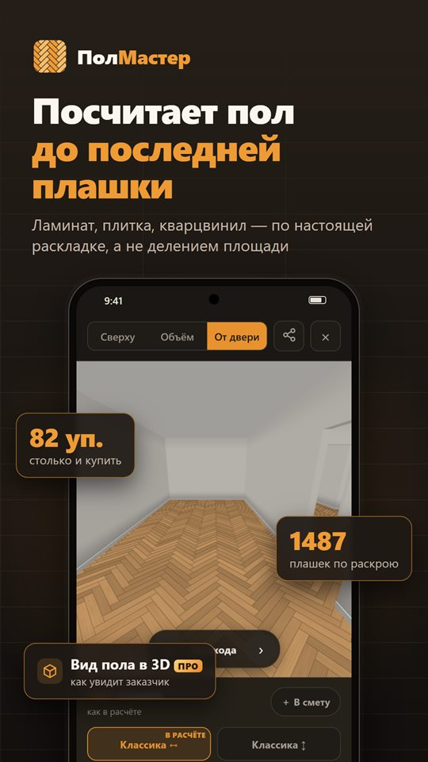
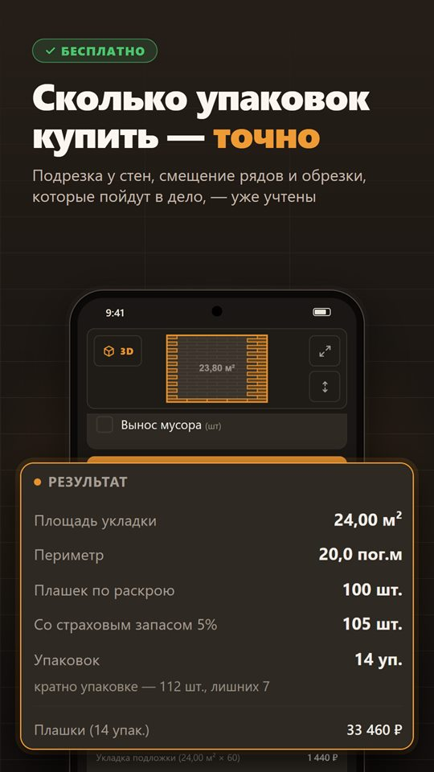
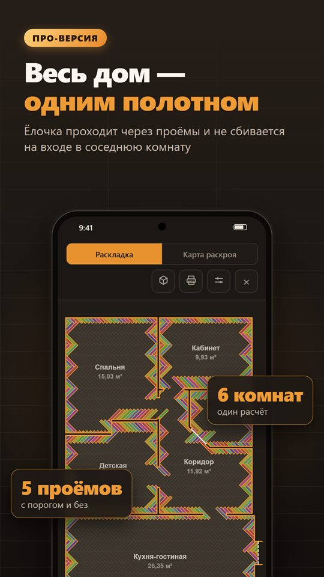
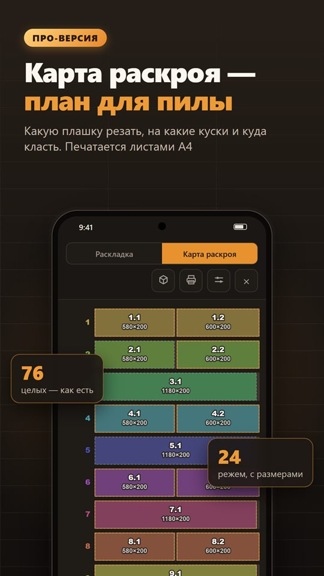
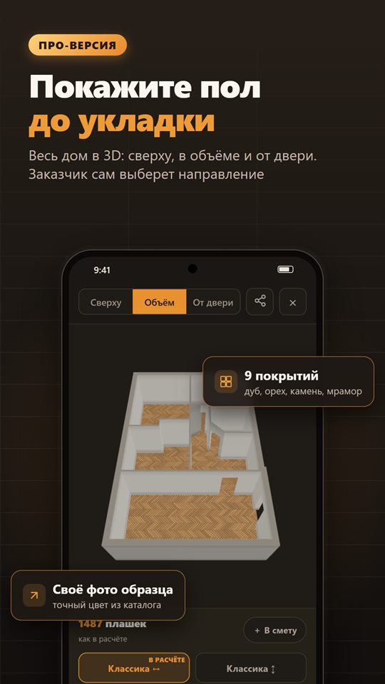
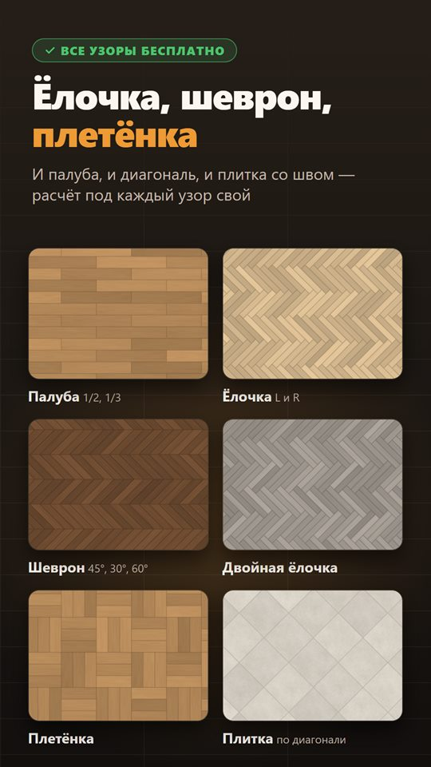
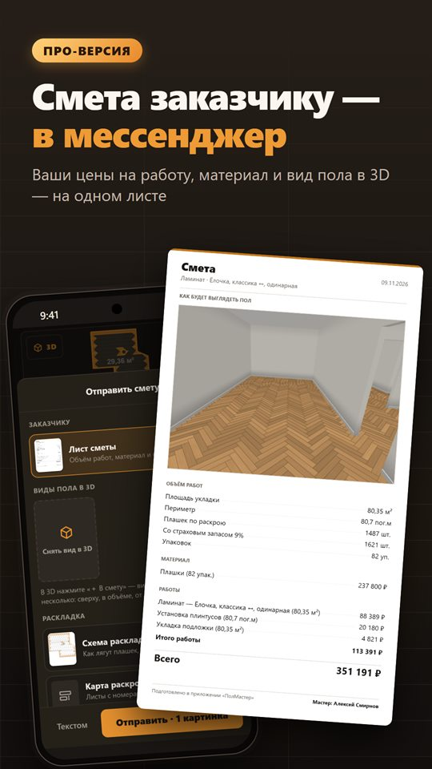
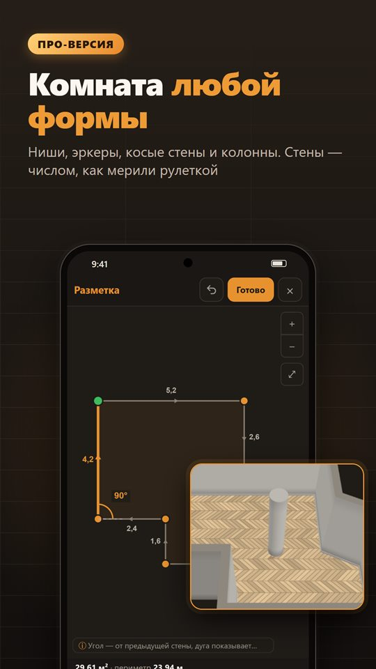
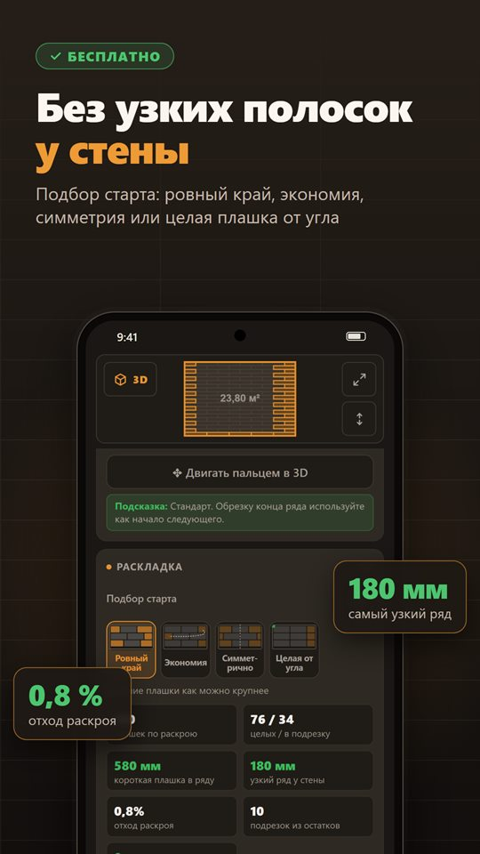

Калькулятор ламината и плитки, который считает по раскрою
Сколько упаковок купить, как ляжет раскладка по комнате и какую плашку где резать. ПолМастер раскладывает покрытие плашка за плашкой — деление площади комнаты на площадь плашки даёт число, которого не хватает. Для укладчика на объекте и для своего ремонта.
Скачать в RuStore Android · расчёт материала бесплатный · работает без интернета · русский, английский, казахский, узбекский








Что умеет
- Расчёт материала для прямоугольной комнаты или просто по площади
- Ламинат, SPC, кварцвинил, LVT, инженерная доска, плитка и керамогранит
- Палубная укладка со смещением 1/2 и 1/3, диагональ, ёлочка, плитка со швом
- Схема раскладки на экране, с зумом на весь экран
- Подбор старта: четыре варианта, где начать первый ряд
- Страховой запас от сложности раскладки, а не «плюс 10 % всем»
- На русском, английском, казахском и узбекском
- Карта раскроя: какую плашку резать и на какие куски, с номерами и размерами
- План дома: комнаты через стены, проёмы с порогом или без, укладка одним полотном
- Несколько комнат в объекте — обрезок из одной идёт в другую
- Вид пола в объёме — сверху и от двери, как увидит заказчик
- Смета с вашими ценами на работу — картинкой в мессенджер
- Карта раскроя на печать листами A4
- Комнаты любой формы: выступы, ниши, эркеры, колонны
- История объектов с заметками и фото, свои нормы производителя
Что учитывает расчёт
Тип соединения. У замкового покрытия обрезок нельзя положить куда угодно: замок с одной стороны. У клеевого можно — и раскрой выходит экономнее. Приложение считает по-разному.
Пропил. Инструмент съедает миллиметры: из плашки 1380 две половины по 690 не выходят. Ширина пропила настраивается.
Нормы производителя. Минимальная длина плашки в ряду, минимальная ширина крайнего ряда, смещение стыков.
Ёлочка. Левые и правые плашки зеркальные и не заменяют друг друга — приложение раскладывает их комплектами.
Весь дом одним полотном
Ёлочку или плитку через весь дом кладут одним рисунком, и главный вопрос — где ляжет рез в проёме и на входе, чтобы не вышла узкая полоска. В плане дома комнаты стоят на своих местах, стены — своей толщины, у каждого проёма отмечено, есть ли порог. Раскладка считается по всему дому сразу, а карта раскроя и смета — на весь дом.
Подбор старта
Одна и та же комната при разной точке старта требует разного количества материала. Приложение перебирает варианты и предлагает четыре: ровный край, экономия, симметричная подрезка у противоположных стен и целая плашка от угла.
Для заказчика и для пилы
Вид пола в объёме — дом со стенами и проёмами, сверху и от двери. Смета, виды пола, схема и карта раскроя уходят заказчику картинками в мессенджер. Карта раскроя печатается листами A4 — лист кладут у пилы.
Работает без интернета
Всё считается на самом телефоне — на объекте, где нет связи. У приложения нет ни одного разрешения Android, и оно ничего никуда не отправляет. Расчёты и история остаются на телефоне, рекламы нет.
Про-версия
Акция до 31 декабря: первый год — 490 ₽ вместо 990 ₽, навсегда — 1490 ₽ вместо 2490 ₽, месяц — 199 ₽. Автосписаний нет: когда срок подходит к концу, приложение напомнит.
Как купить: напишите разработчику и пришлите код устройства из окна «Про-версия». После оплаты придёт ключ — он привязан к вашему телефону. Интернет для проверки ключа не нужен.
Статьи
Как рассчитать ламинат на комнату Почему деление площади даёт меньше, чем нужно, и сколько брать на самом деле Укладка ёлочкой: сколько брать и как считать Левые и правые плашки, запас и раскладка от центра комнаты Французская ёлочка: расчёт материала Шеврон со скосом 45°, 30° и 60° — сколько досок брать и почему правила не работают Сколько плитки брать на пол Прямая укладка, диагональ и крупный формат — где уходит запас Как рассчитать кварцвинил Замковый SPC и клеевой LVT считаются по-разному Откуда начинать укладку ламината Направление досок, первая стена и как не получить полоску у дальней стеныСвязь
Вопросы, идеи и покупка Про-версии: Telegram @Shacallll, почта davleev_zinnur@mail.ru. Из приложения — кнопка «Написать для покупки» в окне «Про-версия»: она сама приложит код устройства.